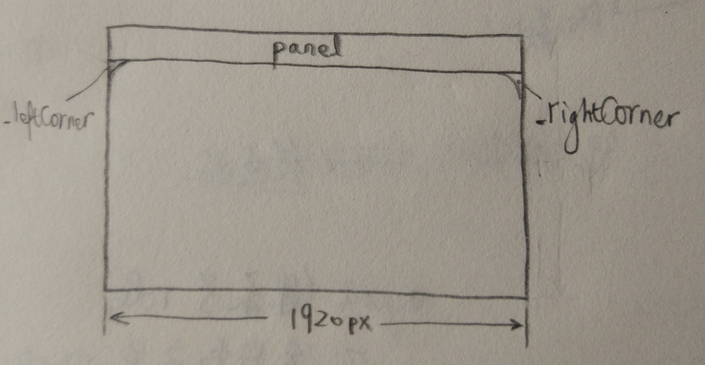

Gnome is an open source desktop environment under Linux.
The way for debugging gnome-shell extension
1 | journalctl /usr/bin/gnome-shell -f |
gnome-extensions disable my-extension@wsd to disable the extension
Alt+F2 and input r to restart.
gnome-extensions enable my-extension@wsd to reload the extension
Here I append the command for logout current desktop user:1
sudo pkill Xorg # Or sudo pkill Xwayland
Reading source code of gnome shell extension: fullscreen-hotcorner
1 | function _removeHotCorners() { |
This code part uses arrow function. It is equivelent to
1 | this.hotCorners.forEach( |
So the aim of function _removeHotCorners is to clear all hot corners that exist.
ui.layout.HotCorner._rtl suggest the text direction in the widget.
you can go to ~/.local/share/gnome-shell/extensions for reading another source code.
Looking glass tool
enter by Alt+F2
exit by Esc
Write an extension on your own
Transparent panel
The top bar (panel) widget is created by gnome shell in ui.main.panel. The picture of some widgets below can be illustrated here:

Its css file is defined in gnome-shell/data/theme/gnome-shell-sass/widgets/_panel.scss1
2
3
4
5
6
7
8
9
10
11$panel_bg_color: #000;
#panel {
background-color: $panel_bg_color;
......
// the rounded outset corners
.panel-corner {
-panel-corner-background-color: $panel_bg_color;
-panel-corner-border-color: transparent;
......
}
}
so that we write css as
stylesheet.css1
2
3
4
5
6
7
8.topbar-transparency {
background-color: rgba(0,0,0,0.5); /* set object.background-color=half transparent */
}
/* set the very small(2pt) round color between panel and its adjacent part */
.roundcorner-transparency {
-panel-corner-background-color: transparent;
}
and we go to find the panel and corner name in gnome-shell/js/ui/panel.js1
2
3
4
5
6
7
8
9
10
11
12
13
14
15
16var Panel = GObject.registerClass(
class Panel extends St.Widget {
_init() {
super._init({name: 'panel',
reactive: true});
......
this.leftCorner = new PanelCorner(St.Side.LEFT);
this.add_child(this._leftCorner);
this._rightCorner = new PanelCorner(St.Side.RIGHT);
this.add_child(this._rightCorner);
......
}
......
}
)
Then we produces our extension.js1
2
3
4
5
6
7
8
9
10
11
12
13
14
15
16
17
18
19
20
21
22
23;
// This is a handy import we'll use to grab our extension's object
const Main = imports.ui.main;
function init() {
log(`initializing ${Me.metadata.name} version ${Me.metadata.version}`);
}
function enable() {
log(`enabling ${Me.metadata.name} v.${Me.metadata.version}`);
// Add transparency
Main.panel.actor.add_style_class_name('topbar-transparency');
Main.panel.actor._leftCorner.add_style_class_name('roundcorner-transparency');
Main.panel.actor._rightCorner.add_style_class_name('roundcorner-transparency');
}
function disable() {
log(`disabling ${Me.metadata.name} version ${Me.metadata.version}`);
Main.panel.actor.remove_style_class_name('topbar-transparency');
Main.panel.actor._leftCorner.remove_style_class_name('roundcorner-transparency');
Main.panel.actor._rightCorner.remove_style_class_name('roundcorner-transparency');
}